Using sourmashconsumr to parse, analyze, and visualize the outputs of the sourmash python package
November 2022
sourmashconsumr.RmdIntroduction
Sourmash is a tool that facilitates lightweight and rapid comparisons between potentially very large sets of sequencing data1 2.
Sourmashconsumr provides parsing, analysis, and visualization
functions for outputs generated by the sourmash commands
sketch, compare, gather, and
taxonomy annotate. The sourmash outputs that
sourmashconsumr works with are information-rich text files (either CSV
or JSON). The sourmashconsumr functions are designed to help interpret
these outputs.
sourmashconsumr does not re-implement any of the functionality in the original sourmash software.
How sourmash works
Sourmash uses FracMinHash sketching to generate compressed
representations of sequencing data. Two core parameters determine which
sequences are represented in these sketches: k-mer size and scaled
value. The k-mer size dictates the length of sequences represented in
the sketch; defaults are k = 21, k = 31, and
k = 51. While these sizes are somewhat empiric, overlap between
related genomic sequences for a given k-mer size roughly approximates
taxonomic relationships, with substantial overlap at k = 21
roughly approximating genus-level relatedness, k = 31
species-level, and k = 51 strain-level 3. The scaled value
dictates the fraction of k-mers in the original sequence that get
included in the sketch. Approximately 1/scaled value of
k-mers in the original sequence are retained in the sketch. The most
common scaled values are 1000, 2000, and 10,000. The scaled value takes
advantage of the fact that a subset of sequencing data can be used to
accurately estimate things like similarity and containment and
dramatically sub-samples the original sequences thus facilitating rapid
comparisons even between very large data sets.
Sourmash outputs that sourmashconsumr works on
The sourmashconsumr package works with outputs from the following sourmash commands. We provide a brief description of each command, but be sure to check the sourmash documentation for a more complete explanation and examples.
-
sourmash sketch: Produces sketches for each sequence. Any sequencing data (DNA, protein, or 6-frame translation) in FASTQ or FASTA format can be sketched. Files produced bysourmash sketchare referred to as signatures because they may contain many sketches (one sketch for each k-mer size). -
sourmash compare: Compares many sketches and produces a (dis)similarity matrix. If abundance information is ignored, the output represents jaccard distance. If abundance information is included, the output represents angular distance. -
sourmash gather: Compares each query sketch against all sketches in a database to identify the minimum set of sketches that contain all of the known k-mers in the query. Typically,sourmash gatheris run on metagenomes to determine all of the genomes that are contained within the sample, howeversourmash gathercan be used to assess containment between a query and a large database of sequences (e.g. for contamination discovery). -
sourmash taxonomy annotate: Assigns taxonomic lineages to the sourmash gather matches.
Naming signatures in sourmash to get the most out of sourmashconsumr functions
Many functions in the sourmashconsumr R package rely on signatures
names. Signature names are set when you sketch a file by using the
--name or --merge flags:
sourmash sketch dna -p k=21,k=31,k=51,scaled=1000,abund -o sample1.sig --name sample1 sample1*fastq.gzThe above command would create a signature with three DNA sketches
(one for each k size), each with a scaled value of 1000 and abundance
tracking turned on. The signature name would be sample1 and
it would contain sequences from all FASTQ files that start with
sample1 and end in fastq.gz, and it would be
written to the file sample1.sig.
The signature name would be read into R as a column,
name, if you read the output file sample1.sig
into R (see below). The signature name is also propagated to the outputs
of sourmash gather and
sourmash taxonomy annotate; if you read these output files
into R, the signature name would be in the column
query_name.
Many of the sourmashconsumr functions use the name or
query_name columns. If you didn’t use the
--name flag when you sketched your signatures, you have two
options to create the name/query_name
column:
- If you would like to add names to your sourmash signatures, you can
use the sourmash command
sourmash sig rename. This might be the best solution if you plan to work with the signatures more.
sourmash signature rename file1.sig "new name" -o renamed.sig- If you already ran
sourmash gatheron your signatures, you can instead edit this column in R or excel. For example, you could do something like this in R:
sourmashconsumr::read_gather("my_gather_results.csv") %>%
dplyr::mutate(query_name = basename(query_filename))Installation
You can install the development version of sourmashconsumr from GitHub with:
# install.packages("remotes")
remotes::install_github("Arcadia-Science/sourmashconsumr")Eventually, we hope to release sourmashconsumr on CRAN and to provide a conda-forge package. We’ll update these instructions once we’ve done that.
To access the functions in the sourmashconsumr package:
Problems & getting help
If you encounter any problems using sourmashconsumr, please post an issue on the issue tracker: https://github.com/Arcadia-Science/sourmashconsumr/issues. If you encounter problems with sourmash, please post an issue on the sourmash issue tracker: https://github.com/sourmash-bio/sourmash/issues.
Package functionality
Load example data and vignette dependencies
Load the packages this vignette uses:
Load the example data sets:
Make a metadata frame that corresponds to the example data:
# create a metadata data frame
run_accessions <- c("SRR5936131", "SRR5947006", "SRR5935765",
"SRR5936197", "SRR5946923", "SRR5946920")
groups <- c("cd", "cd", "cd", "nonibd", "nonibd", "nonibd")
metadata <- data.frame(run_accessions = run_accessions, groups = groups) Example data
The sourmashconsumr package comes with a few example data sets that you can load to get a feel for data formats and to play around with the functions in the package.
The example data are six samples from the iHMP IBD cohort. These are short shotgun metagenomes from stool microbiomes. While the iHMP was a longitudinal study, the samples in the example data are all time point 1 samples taken from different individuals. All individuals were symptomatic at time point 1, but three individuals were diagnosed with Crohn’s disease (cd) at the end of the year, while three individuals were not (nonIBD).
| run_accession | group |
|---|---|
| SRR5936131 | cd |
| SRR5947006 | cd |
| SRR5935765 | cd |
| SRR5936197 | nonibd |
| SRR5946923 | nonibd |
| SRR5946920 | nonibd |
You can see the complete set of commands that were used to generate the data here.
We’ve documented the content of each of the test data sets, including an explanation for what is encoded by each column. If you’re having trouble understanding the content of the sourmash output files, the data set documentation may help. Use the following code to access this information:
?gut_gather_dfReading sourmash outputs into R
All of the sourmashconsumr functions that read in the sourmash
outputs start with read_. All functions accepts compressed
or uncompressed files and can read one or multiple files at a time. When
multiple file paths are passed to a function, all files are read into a
single data frame. If you would like to read in multiple files at once,
the Sys.glob() function or the list.files()
function are useful to determine the paths for many files.
Explanation about accessing external files packaged with sourmashconsumr
Because some of the functions read external files, we’ve also
included example sourmash outputs with the package to demonstrate how
the read*() functions work. Specifying paths to data files
packaged with an R package is a bit ugly…it takes advantage of the base
R function system.file and information about the package to
derive the file paths. While this is helpful because it allows anyone to
access the files in a package no matter where the package is installed
on their computer, the syntax can be confusing because the example ends
up looking a lot different than the code you would actually write.
Whenever you see system.file() in this vignette, know that
when you go to run similar code on your own sourmash outputs, you need
to specify the path to your file to run the command without all of the
accompanying system.file() code. See an example below:
# how we have to specify paths so that anyone can access the package data
fpath <- system.file("extdata", "SRR5947006.sig.gz", package="sourmashconsumr")
signature_df <- read_signature(fpath)
# how you will specify a path when you actually run the code
signature_df <- read_signature("path/to/your_signature_file.sig")Reading sourmash sigatures into R
The sourmashconsumr function read_signature() reads
sourmash signatures produced by the sourmash sketch or
sourmash compute function into a data frame.
fpath <- system.file("extdata", "SRR5947006.sig.gz", package="sourmashconsumr")
signature_df <- read_signature(fpath)
head(signature_df)
#> # A tibble: 6 × 16
#> class email hash_function filename name license num ksize seed max_hash
#> <chr> <chr> <chr> <chr> <chr> <chr> <int> <int> <int> <dbl>
#> 1 sourmas… "" 0.murmur64 SRR5947… SRR5… CC0 0 21 42 9.22e13
#> 2 sourmas… "" 0.murmur64 SRR5947… SRR5… CC0 0 21 42 9.22e13
#> 3 sourmas… "" 0.murmur64 SRR5947… SRR5… CC0 0 21 42 9.22e13
#> 4 sourmas… "" 0.murmur64 SRR5947… SRR5… CC0 0 21 42 9.22e13
#> 5 sourmas… "" 0.murmur64 SRR5947… SRR5… CC0 0 21 42 9.22e13
#> 6 sourmas… "" 0.murmur64 SRR5947… SRR5… CC0 0 21 42 9.22e13
#> # ℹ 6 more variables: scaled <dbl>, mins <dbl>, md5sum <chr>, abundances <int>,
#> # molecule <chr>, version <dbl>If you have many signatures that you would like to read into the same data frame, you can pass a character vector of file paths:
# grab the files paths for two signatures in the sourmashconsumr example data
fpath1 <- system.file("extdata", "SRR5947006.sig.gz", package="sourmashconsumr")
fpath2 <- system.file("extdata", "SRR5935765.sig.gz", package="sourmashconsumr")
fpaths <- c(fpath1, fpath2)
# read in the signature files
signature_df <- read_signature(fpaths)Reading the CSV output of sourmash compare
The sourmash compare output is a square matrix. The CSV has column
names but no row names, but the rownames are symmetrical to the column
names. The read_compare_csv() function reads in the compare
CSV file and adds row names. You can choose whether the row labels are
read in as a column named “sample” or as row names using the
sample_to_rownames argument.
fpath <- system.file("extdata", "gut_compare.csv.gz", package = "sourmashconsumr")
compare_df <- read_compare_csv(fpath, sample_to_rownames = F)
#> Rows: 6 Columns: 6
#> ── Column specification ────────────────────────────────────────────────────────
#> Delimiter: ","
#> dbl (6): SRR5935765, SRR5936131, SRR5936197, SRR5946920, SRR5946923, SRR5947006
#>
#> ℹ Use `spec()` to retrieve the full column specification for this data.
#> ℹ Specify the column types or set `show_col_types = FALSE` to quiet this message.
compare_df
#> # A tibble: 6 × 7
#> sample SRR5935765 SRR5936131 SRR5936197 SRR5946920 SRR5946923 SRR5947006
#> <chr> <dbl> <dbl> <dbl> <dbl> <dbl> <dbl>
#> 1 SRR5935765 1 0.283 0.269 0.139 0.197 0.115
#> 2 SRR5936131 0.283 1 0.488 0.148 0.350 0.135
#> 3 SRR5936197 0.269 0.488 1 0.183 0.546 0.134
#> 4 SRR5946920 0.139 0.148 0.183 1 0.175 0.0943
#> 5 SRR5946923 0.197 0.350 0.546 0.175 1 0.172
#> 6 SRR5947006 0.115 0.135 0.134 0.0943 0.172 1Reading the CSV output of sourmash gather
The read_gather() function reads in the CSV output by
sourmash gather. You can optionally filter the matches using
intersect_bp_threshold. The function does no filtering by
default. However, sourmash gather uses a threshold of 50,000 base pairs,
so if you decreased this value when you ran sourmash gather, it may make
sense to filter with intersect_bp_thershold = 50000. Most
false positives are caused by contamination in the reference genomes in
the database, so low filtering thresholds can improve accuracy.
fpath <- system.file("extdata", "SRR5946920_gather_gtdbrs207_reps.csv.gz", package = "sourmashconsumr")
gather_df <- read_gather(fpath, intersect_bp_threshold = 50000)
head(gather_df)
#> # A tibble: 6 × 30
#> intersect_bp f_orig_query f_match f_unique_to_query f_unique_weighted
#> <dbl> <dbl> <dbl> <dbl> <dbl>
#> 1 3787000 0.0318 0.583 0.0318 0.0496
#> 2 3544000 0.0298 0.707 0.0297 0.0956
#> 3 3622000 0.0304 0.773 0.0294 0.0298
#> 4 2993000 0.0252 0.613 0.0251 0.0140
#> 5 2941000 0.0247 0.619 0.0240 0.0531
#> 6 2389000 0.0201 0.585 0.0192 0.0624
#> # ℹ 25 more variables: average_abund <dbl>, median_abund <dbl>,
#> # std_abund <dbl>, filename <chr>, name <chr>, genome_accession <chr>,
#> # md5 <chr>, f_match_orig <dbl>, unique_intersect_bp <dbl>,
#> # gather_result_rank <dbl>, remaining_bp <dbl>, query_filename <chr>,
#> # query_name <chr>, query_md5 <chr>, query_bp <dbl>, ksize <dbl>,
#> # moltype <chr>, scaled <dbl>, query_n_hashes <dbl>, query_abundance <lgl>,
#> # query_containment_ani <dbl>, match_containment_ani <dbl>, …Reading the CSV output of sourmash taxonomy annotate
The read_taxonomy_annotate() function reads the CSV
output by sourmash taxonomy annotate. Taxonomy annotate adds a taxonomic
lineage column to the sourmash gather output. You can filter with
intersect_bp_threshold (see above). You can also separate
the lineage into taxonomy ranks using separate_lineage.
This function assumes that the lineage ranks are separated by
semi-colons (;), and that the lineage is composed of a domain, phylum,
class, order, family, genus, species, and strain. If information is
missing, it is back-filled with NAs.
fpath <- system.file("extdata", "SRR5946920_gather_gtdbrs207_reps.with-lineages.csv.gz", package = "sourmashconsumr")
taxonomy_annotate_df <- read_taxonomy_annotate(fpath,
intersect_bp_threshold = 50000,
separate_lineage = T)
head(taxonomy_annotate_df)
#> # A tibble: 6 × 40
#> intersect_bp f_orig_query f_match f_unique_to_query f_unique_weighted
#> <dbl> <dbl> <dbl> <dbl> <dbl>
#> 1 3787000 0.0318 0.583 0.0318 0.0496
#> 2 3544000 0.0298 0.707 0.0297 0.0956
#> 3 3622000 0.0304 0.773 0.0294 0.0298
#> 4 2993000 0.0252 0.613 0.0251 0.0140
#> 5 2941000 0.0247 0.619 0.0240 0.0531
#> 6 2389000 0.0201 0.585 0.0192 0.0624
#> # ℹ 35 more variables: average_abund <dbl>, median_abund <dbl>,
#> # std_abund <dbl>, filename <chr>, name <chr>, genome_accession <chr>,
#> # md5 <chr>, f_match_orig <dbl>, unique_intersect_bp <dbl>,
#> # gather_result_rank <dbl>, remaining_bp <dbl>, query_filename <chr>,
#> # query_name <chr>, query_md5 <chr>, query_bp <dbl>, ksize <dbl>,
#> # moltype <chr>, scaled <dbl>, query_n_hashes <dbl>, query_abundance <lgl>,
#> # query_containment_ani <dbl>, match_containment_ani <dbl>, …Working with sourmash signatures (FracMinHash sketches)
Sourmash signatures are compressed representations of sequencing data. This data can be used for many different purposes such as machine learning4, differential k-mer abundance analysis, and sequencing depth/rarefaction analysis.
Visualizing shared k-mer content between samples with an upset plot
The functions from_signatures_to_upset_df() and
plot_signatures_upset() produce an upset plot that depicts
the number of k-mers shared between sets of samples. The absolute size
of the intersection is the number of shared hashes (k-mers) in scaled
FracMinHash sketches (see How sourmash
works for an explanation of sketches and their content.). These
plots do not take abundance information into account.
An upset plot is an alternative to a venn diagram; the bottom half of the plot shows which samples have shared content while the top half of the plot shows the size of the intersection between the specified samples.
This plot is good for visualizing the exact sequencing content overlap between samples. If there is a lot of variation in the samples, it might be difficult to interpret the plot as there may be many intersections. Still, it provides a nice complement to the sourmash compare results and plots as it gives more information about the nature of the intersections between samples.
gut_signatures_df <- gut_signatures_df %>%
dplyr::filter(ksize == 31)
gut_signatures_upset_df <- from_signatures_to_upset_df(signatures_df = gut_signatures_df)
head(gut_signatures_upset_df)
#> SRR5935765 SRR5936131 SRR5936197 SRR5946920 SRR5946923 SRR5947006
#> 7504968134 1 1 0 1 0 1
#> 47418666416 1 0 0 0 0 0
#> 91683251943 1 1 0 1 0 1
#> 133675644697 1 0 0 0 0 0
#> 232110850204 1 0 0 0 0 0
#> 320454190342 1 1 1 1 1 0
plot_signatures_upset(gut_signatures_upset_df)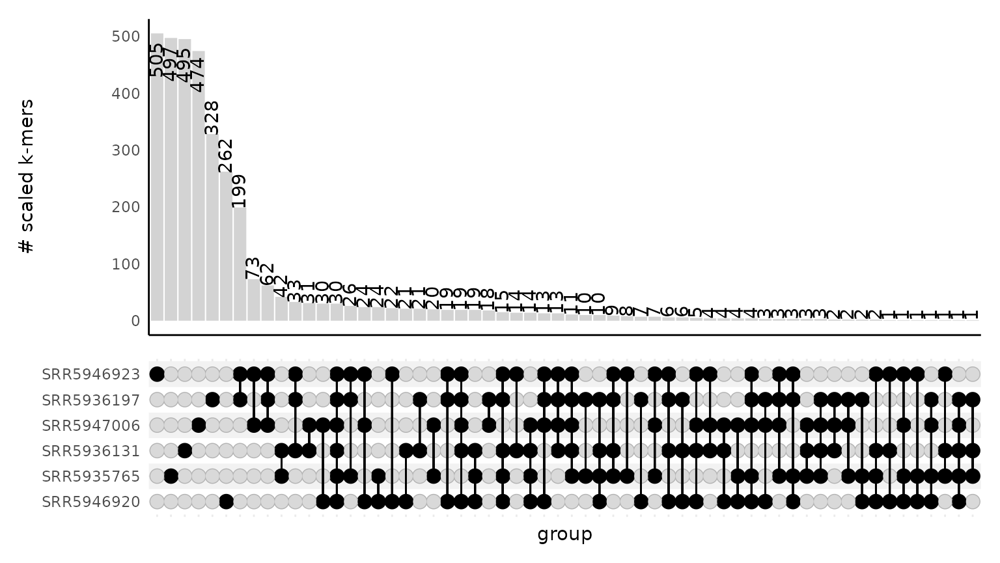
Any additional arguments that can be passed to
ComplexUpset::upset() can be added to the end of the
function to further control the look of the plot. ComplexUpset
has a lot of documentation and examples for modifying plots. Below, we
use some of these arguments to modify common parts of the upset plot. We
use bright colors to make it obvious which components of the plot the
arguments modify.
plot_signatures_upset(upset_df = gut_signatures_upset_df,
# arguments to ComplexUpset::upset():
stripes = c("cyan"),
name = "Groups!",
min_size = 10,
themes = ComplexUpset::upset_default_themes(text=element_text(size = 16, color = "orange"),
axis.text.y = element_text(size = 13, color = "blue"),
panel.grid = element_blank()))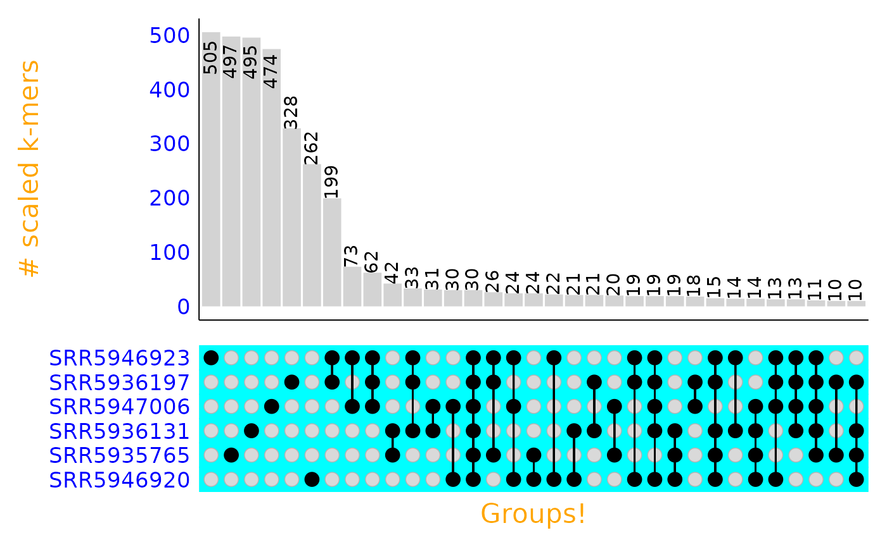
Assessing sample sequencing depth using rarefaction (accumulation) curves
The goal of the from_signatures_to_rarefaction_df() and
plot_signatures_rarefaction() functions is to produce a
rarefaction curve to assess whether an adequate sequencing depth was
reached to capture the complexity of the sample sequenced. These
functions should work on raw or trimmed reads from short or long read
sequencing data generated from most library types (e.g. genomes,
transcriptomes, metagenomes, metatranscriptomes, etc.). If your library
is non-complex (e.g. amplicon sequencing data), you may need to use a
lower scaled value. Rarefaction curves rely on the abundance of
sequences in a sample. Therefore, it only makes sense to generate
rarefaction curves from signatures that were made with FASTQ files and
that had abundance tracking turned on. Further, these curves may be more
accurate if you build them with sequences from many samples from similar
environments. In case signatures were built from reads that have not
been k-mer trimmed, there is a filtering step that removes hashes
(k-mers) that are only observed once and only observed in one sample as
these are likely sequencing errors. Please note that this filtering
process may invalidate downstream rarefaction curve convergence
estimation as many of these methods evaluate singletons and doubletons
in the data set.
The function from_signatures_to_rarefaction_df() may
take a while to run. We’ve found it produces fairly consistent results
even when signatures are dramatically downsampled with a high scaled
value (e.g. scaled = 100000). You can downsample your
signatures with sourmash prior to reading them into R using the function
sourmash sig downsample. See the sourmash documentation for
more details.
# filter to a single k-mer size
gut_signatures_df <- gut_signatures_df %>%
dplyr::filter(ksize == 31)
rarefaction_df <- from_signatures_to_rarefaction_df(signatures_df = gut_signatures_df)
head(rarefaction_df)
#> name num_kmers_sampled num_kmers_observed
#> 1 SRR5935765 1 1.000000
#> 2 SRR5935765 2 1.993401
#> 3 SRR5935765 3 2.980279
#> 4 SRR5935765 4 3.960713
#> 5 SRR5935765 5 4.934776
#> 6 SRR5935765 6 5.902544
rarefaction_plt <- plot_signatures_rarefaction(rarefaction_df = rarefaction_df, fraction_of_points_to_plot = 1)
rarefaction_plt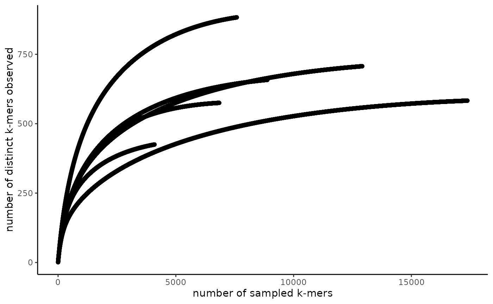
The plot produced by plot_signatures_rarefaction is a
ggplot2 plot, so you can modify it by adding additional layers:
rarefaction_plt +
ggplot2::theme_minimal()
Color by sample name:
rarefaction_plt +
ggplot2::theme_minimal() +
ggplot2::geom_point(ggplot2::aes(color = name))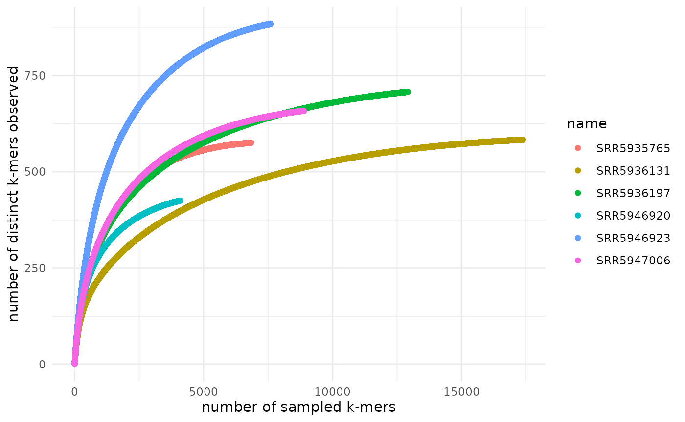
Add your own metadata to the rarefaction_df and use it
in the plot:
# join the metadata data frame with the rarefaction_df
rarefaction_df <- rarefaction_df %>%
dplyr::left_join(metadata, by = c("name" = "run_accessions"))
# create and modify a plot
plot_signatures_rarefaction(rarefaction_df = rarefaction_df, fraction_of_points_to_plot = 1) +
ggplot2::theme_minimal() +
ggplot2::geom_point(ggplot2::aes(color = groups))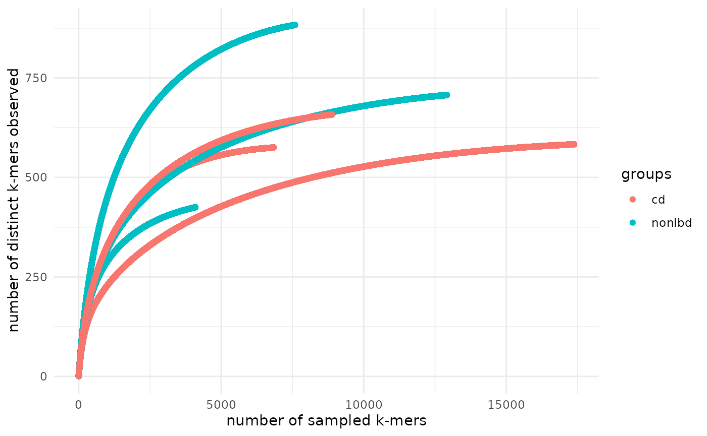
Working with the CSV output of sourmash compare
Sourmash compare outputs an all-by-all similarity matrix for a group of samples (by default, the matrix is a similarity matrix, but users can switch this to a dissimilarity matrix with a command line flag). When the samples were sketched with abundance tracking as was done here (e.g. the abundance of each k-mer was recorded), the similarity matrix encodes the angular distance. The sourmashconsumr package supports two visualizations from the CSV output of sourmash compare, an MDS (ordination) plot and a clustered heat map.
MDS plot from sourmash compare output
The MDS plot allows you to visualize how similar each sample is to every other sample in two dimensional space. Samples that cluster more closely together are most similar.
gut_compare_mds_df <- make_compare_mds(gut_compare_df)
head(gut_compare_mds_df)
#> sample MDS1 MDS2
#> 1 SRR5935765 0.0775339 0.13464650
#> 2 SRR5936131 -0.3745227 -0.03349708
#> 3 SRR5936197 -0.5022308 -0.03442290
#> 4 SRR5946920 0.5039572 0.64805445
#> 5 SRR5946923 -0.3743700 -0.10706435
#> 6 SRR5947006 0.6696324 -0.60771661
compare_plt <- plot_compare_mds(gut_compare_mds_df)
compare_plt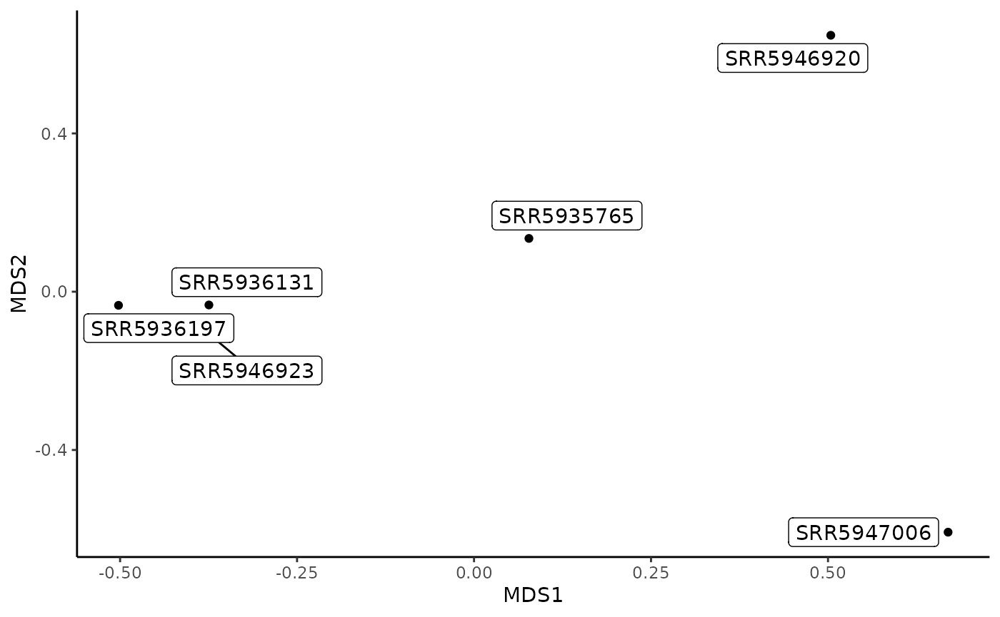
The MDS plot is a ggplot2 object, so you can modify it by adding layers.
compare_plt +
ggplot2::theme_minimal()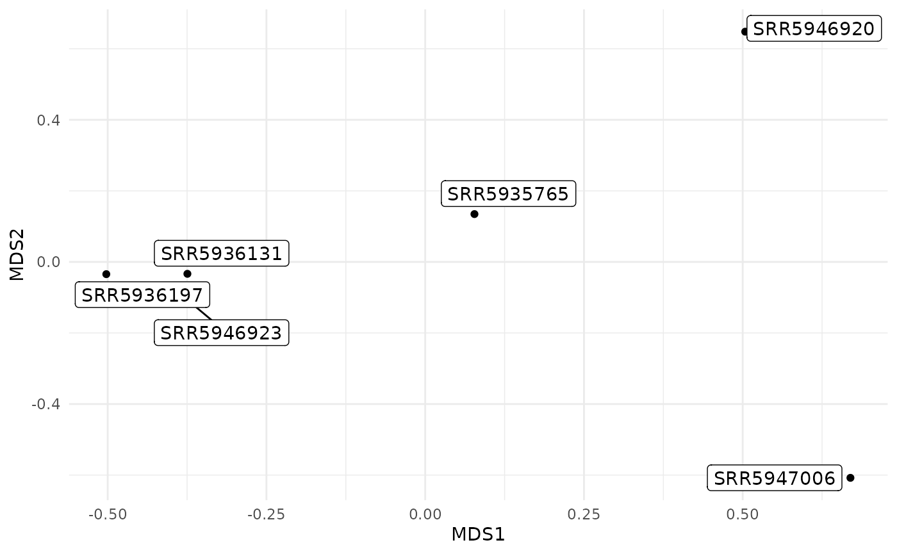
You can also add metadata directly to the data frame output by
make_compare_mds so that you can add it to a plot:
gut_compare_mds_df %>%
dplyr::left_join(metadata, by = c("sample" = "run_accessions"))
#> sample MDS1 MDS2 groups
#> 1 SRR5935765 0.0775339 0.13464650 cd
#> 2 SRR5936131 -0.3745227 -0.03349708 cd
#> 3 SRR5936197 -0.5022308 -0.03442290 nonibd
#> 4 SRR5946920 0.5039572 0.64805445 nonibd
#> 5 SRR5946923 -0.3743700 -0.10706435 nonibd
#> 6 SRR5947006 0.6696324 -0.60771661 cd
plot_compare_mds(gut_compare_mds_df) +
ggplot2::geom_point(ggplot2::aes(color = groups))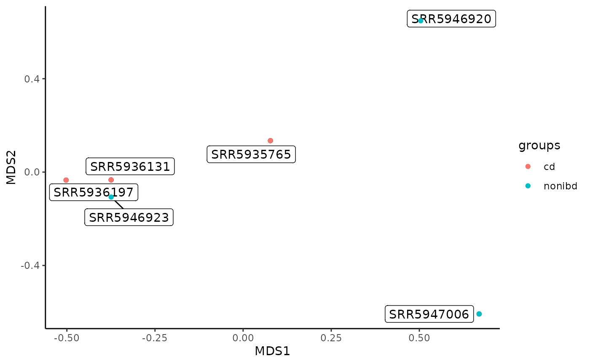
Heatmap from sourmash compare output
The plot_compare_heatmap object works directly on the
output of read_compare_csv(). It’s a wrapper function for
base::heatmap(), so you can add any arguments accepted by
base::heatmap() to modify the look of the plot.
plot_compare_heatmap(gut_compare_df, cexRow = 0.75, cexCol = 0.75)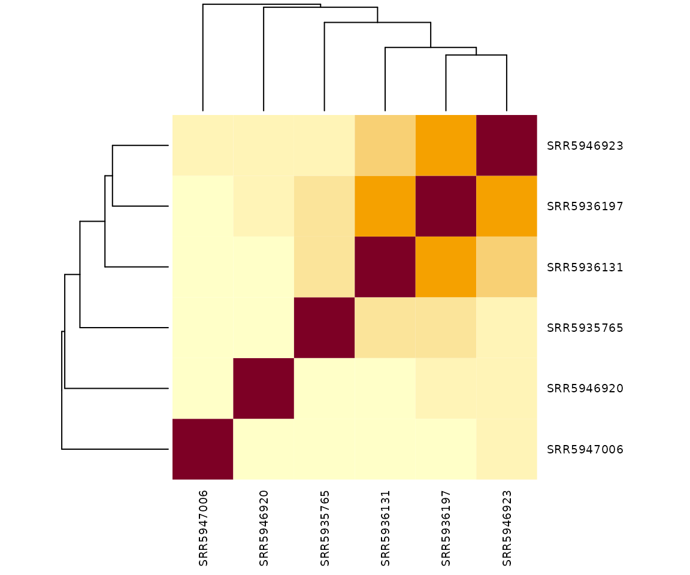
Working with the CSV output of sourmash gather
Sourmash gather compares a query (here, a metagenome) against a database (here, GTDB rs207 representatives) and provides the minimum set of genomes in the database that cover (contain) all of the k-mers in the query.
Sourmash gather works best for metagenomes from environments that have been sequenced before or from which many genomes have been isolated and sequenced. Because k-mers are so specific, a genome needs to be in a database for sourmash gather to find a match. Sourmash gather won’t find much above species (k = 31) or genus (k = 21) similarity, so if most of the organisms in a sample are new, sourmash won’t be able to label them.
Sourmashconsumr produces two plots from the sourmash gather results: a high-level bargraph summarizes the fraction of the sample that had matches in the database, and an upset plot showing intersections between genomes that were matched in multiple samples. These plots are designed to visualize the output of running sourmash gather on many samples in the same plot.
Fraction classifed plot from sourmash gather output
The actual number that is plotted is referred to as abundance-weighted unique fraction. By default, sourmash gather returns the following information:
-
f_orig_query: the fraction of the original query (metagenome sample) that matched against the genome -
f_unique_to_query: the fraction of the matched genome that was unique to the query. Given that multiple matched genomes could cover the same portion of the query, this column reports the fraction of the query that was covered by the a matched genome, but doesn’t allow multiple genomes to cover the same portion. As such, the genome that covers the most k-mers in a metagenome sample gets to “anchor” those k-mers, while other genomes that could cover those k-mers don’t get any of them. This column removes the double counting problem that arises from having multiple genomes in a database that contain some of the same sequences. -
f_unique_weighted: This column weights the f_unique_to_query by the abundance of those k-mers. This is important in the context of a metagenome, as the abundance reflects the abundance of the genome in the original microbial community.
The plots below use f_unique_weighted to look at the
taxonomic composition of each metagenome sample. This value is similar
to looking at the fraction of reads that would map against reference
genomes.
plot_gather_classified(gather_df = gut_gather_df)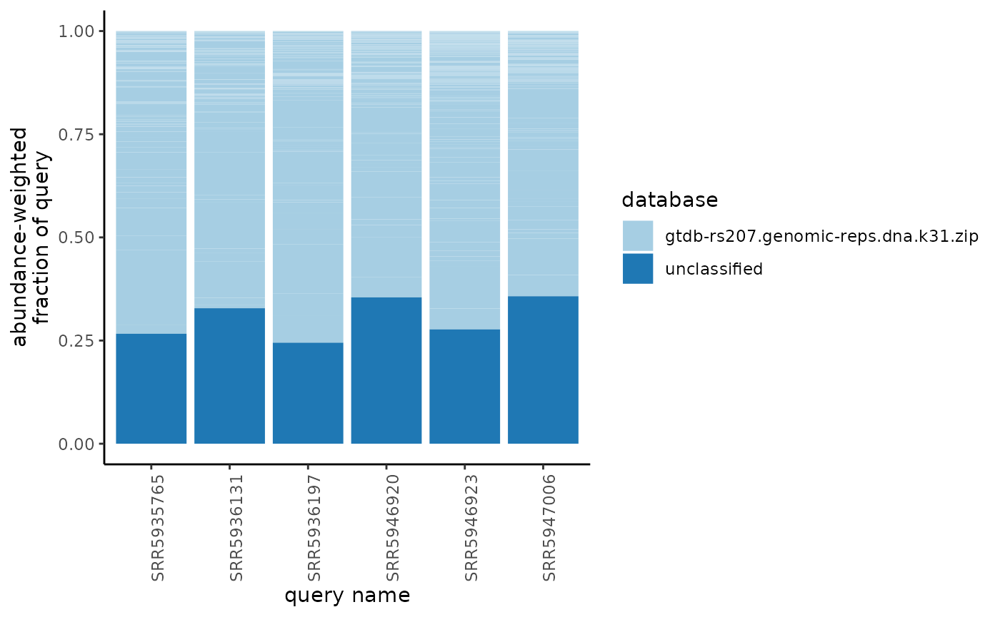
Upset plot from sourmash gather output
An upset plot is an alternative to a venn diagram; the bottom half of the plot shows which samples have shared content while the top half of the plot shows the size of the intersection between the specified samples.
This upset plot visualizes the intersection of genomes that were identified in different samples.
gut_gather_upset_df <- from_gather_to_upset_df(gather_df = gut_gather_df)
head(gut_gather_upset_df)
#> SRR5935765 SRR5936131 SRR5936197 SRR5946920 SRR5946923
#> GCF_002234575.2 1 1 0 1 0
#> GCF_001314995.1 1 1 1 1 1
#> GCF_000154205.1 1 1 1 1 1
#> GCF_000012825.1 1 1 1 1 1
#> GCF_002222615.2 1 1 1 1 1
#> GCF_000466485.1 1 1 0 1 0
#> SRR5947006
#> GCF_002234575.2 1
#> GCF_001314995.1 1
#> GCF_000154205.1 1
#> GCF_000012825.1 1
#> GCF_002222615.2 0
#> GCF_000466485.1 1
plot_gather_upset(upset_df = gut_gather_upset_df)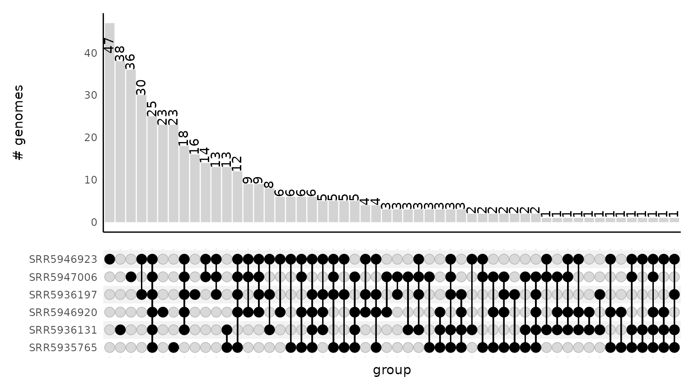
The bars in the upset plot can optionally be colored by the database the match came from. This is useful when you use many databases when running sourmash gather. Since we only used one database to classify our samples in the example data, the visualization isn’t much more rewarding.
plot_gather_upset(upset_df = gut_gather_upset_df,
color_by_database = T,
gather_df = gut_gather_df)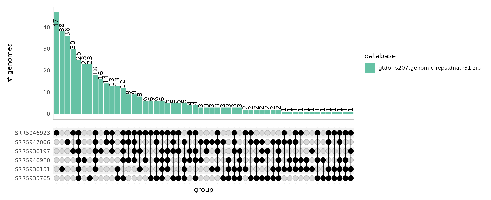
You can change the palette by passing a character vector of colors to
the palette argument. If no palette is specified, it
defaults to RColorBrewer’s Set2.
plot_gather_upset(upset_df = gut_gather_upset_df,
color_by_database = T,
gather_df = gut_gather_df,
palette = "red")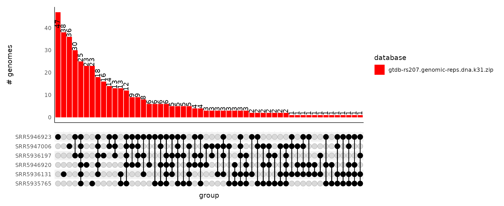
See the Visualizing shared k-mer content between samples with an upset plot for examples of how to modify the look of the upset plot.
Working with the CSV output of sourmash taxonomy annotate
Sourmash taxonomy makes the sourmash gather output more interpretable by adding taxonomic labels to the sourmash gather results. Sourmash gather only outputs the statistics about the samples in a database that were found in a query sample. Taxonomic labels contextualize these results and allow new analyses like agglomeration up the taxonomic lineage to summarize results or visualizing results in the context of taxonomy.
Agglomerating up levels of taxonomy
Inspired by phyloseq::tax_glom(), this method summarizes
variables output by sourmash gather from genomes that have the same
taxonomy at a user-specified taxonomy rank. Agglomeration occurs within
each sample, meaning the variable is only summed within each query_name.
This function returns a data frame with the columns ‘lineage’,
‘query_name’, and the variable that is specified by
glom_var.
glom_df <- tax_glom_taxonomy_annotate(taxonomy_annotate_df = gut_taxonomy_annotate_df,
tax_glom_level = "genus",
glom_var = "f_unique_to_query")
head(glom_df)
#> # A tibble: 6 × 3
#> lineage query_name f_unique_to_query
#> <chr> <chr> <dbl>
#> 1 d__Bacteria;p__Actinobacteriota;c__Actinomycetia… SRR5935765 0.00132
#> 2 d__Bacteria;p__Bacteroidota;c__Bacteroidia;o__Ba… SRR5935765 0.000956
#> 3 d__Bacteria;p__Bacteroidota;c__Bacteroidia;o__Ba… SRR5935765 0.133
#> 4 d__Bacteria;p__Bacteroidota;c__Bacteroidia;o__Ba… SRR5935765 0.0525
#> 5 d__Bacteria;p__Bacteroidota;c__Bacteroidia;o__Ba… SRR5935765 0.00168
#> 6 d__Bacteria;p__Bacteroidota;c__Bacteroidia;o__Ba… SRR5935765 0.000856Visualizing shared taxonomic lineages between samples with an upset plot
gut_taxonomy_upset_inputs <- from_taxonomy_annotate_to_upset_inputs(taxonomy_annotate_df = gut_taxonomy_annotate_df,
tax_glom_level = "order")This function produces a list with three objects. The first,
gut_taxonomy_upset_inputs$upset_df is an upset-formatted
data frame indicating the presense/absence of each lineage for each
sample. The second,
gut_taxonomy_upset_inputs$taxonomy_annotate_df, is a
re-formatted data frame with the taxonomy annotation information. The
third, gut_taxonomy_upset_inputs$tax_glom_level, records
the taxonomy agglomeration level used to create the upset inputs.
This list can then be fed into
plot_taxonomy_annotate_upset() to produce an upset
plot:
plot_taxonomy_annotate_upset(upset_inputs = gut_taxonomy_upset_inputs,
fill = "phylum")
If fill is specified, the bar plot on the upper portion of the upset
plot will be colored by the taxonomic level indicated. The level must be
at or above that used in
from_taxonomy_annotate_to_upset_inputs().
You can change the palette by passing a character vector of colors to
the palette argument. If no palette is specified, it
defaults to RColorBrewer’s Set2.
plot_taxonomy_annotate_upset(upset_inputs = gut_taxonomy_upset_inputs,
fill = "phylum",
palette = c("#999999", "#E69F00", "#56B4E9", "#009E73",
"#F0E442", "#0072B2", "#D55E00", "#CC79A7"))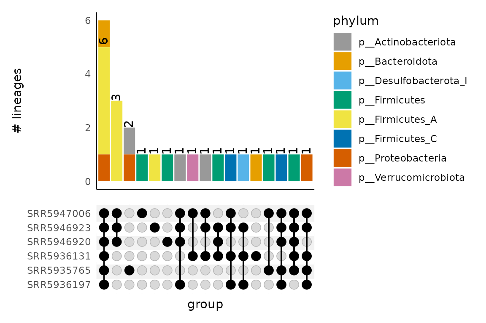
Since upset plots are based on the presence or absence of lineages, the counts in the upset barplot do not reflect the total number of lineages observed at a given taxonomic level, but rather how many lineages are shared between samples at that level – e.g., the numbers are not weighted.
See the Visualizing shared k-mer content between samples with an upset plot for examples of how to modify the look of the upset plot.
Visualizing taxonomy with a Sankey plot
The Sankey plot is designed to show the taxonomic breakdown in one or
many samples. The ribbons in the plot progressively split as the
taxonomic lineage becomes more specific (e.g. from domain to phylum,
phylum to class, etc.). The ribbon width displays the relative abundance
of the taxonomic lineage. The tax_glom_level specifies
which level of the taxonomic lineage to stop displaying the
taxonomy.
The Sankey plot can be generated from one or many samples. Below is an example of a plot generated from one sample:
plot_taxonomy_annotate_sankey(taxonomy_annotate_df = gut_taxonomy_annotate_df %>%
dplyr::filter(query_name == "SRR5935765"),
tax_glom_level = "family")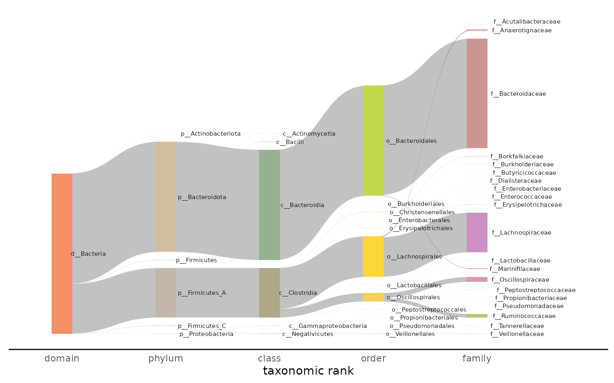
And a plot generated from many samples:
plot_taxonomy_annotate_sankey(taxonomy_annotate_df = gut_taxonomy_annotate_df,
tax_glom_level = "order")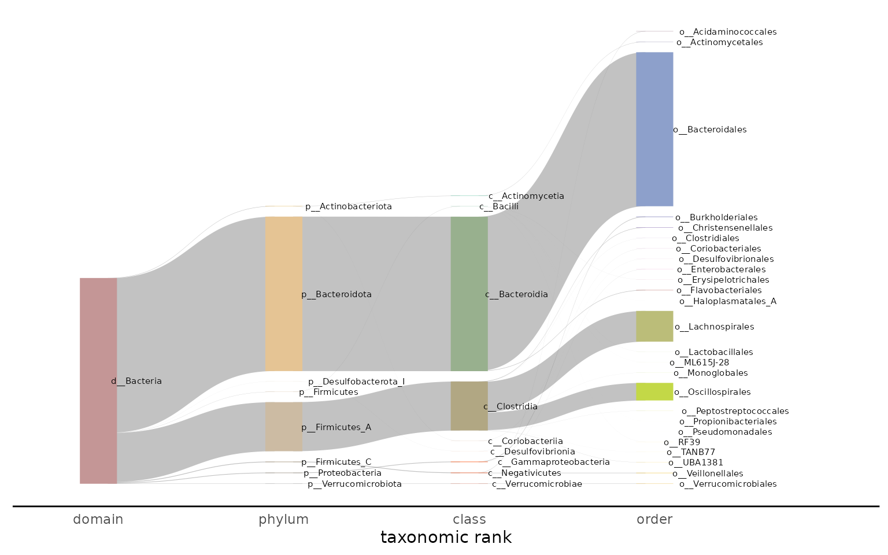
The colors in the Sankey plot are built using the function
grDevices::colorRampPalette() on the RColorBrewer palette
Set2. To change the palette, supply the palette argument
with the hexcodes you would like to ramp up.
plot_taxonomy_annotate_sankey(taxonomy_annotate_df = gut_taxonomy_annotate_df,
tax_glom_level = "order",
palette = RColorBrewer::brewer.pal(8, "Set3"))
By default, taxonomic labels are displayed on the plot
(label = TRUE). If you would like to control the look of
the labels, use label = FALSE and then add a layer to the
output plot for the labels:
plot_taxonomy_annotate_sankey(taxonomy_annotate_df = gut_taxonomy_annotate_df,
tax_glom_level = "order",
palette = RColorBrewer::brewer.pal(8, "Set3"),
label = FALSE) +
ggforce::geom_parallel_sets_labels(colour = 'black', angle = 360, size = 2, hjust = -0.25)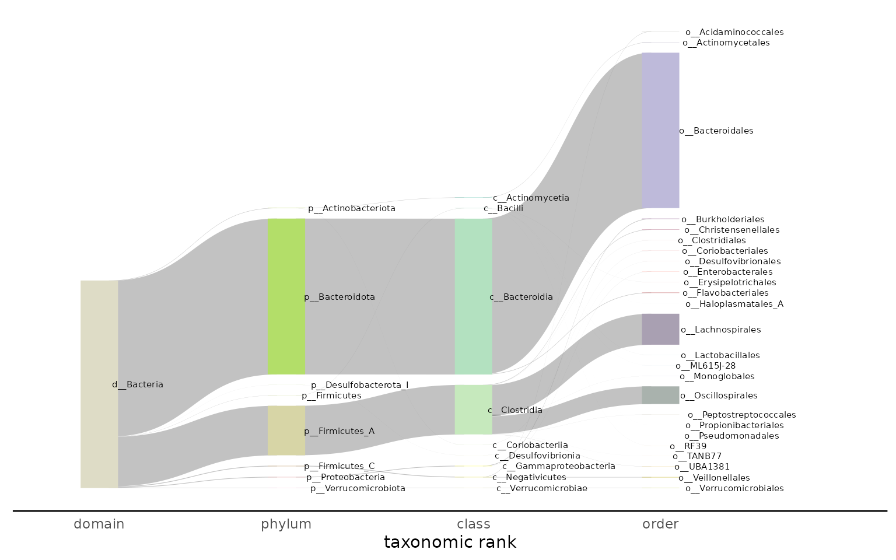
Visualizing taxonomic changes over time with a time series alluvial plot
The time series alluvial plot shows how lineages observed in samples change. It was designed to show how the fraction of taxonomic lineages in community change over time when samples are taken in time series. One level of taxonomy (e.g. order) is shown throughout the plot, and the alluvial ribbons show how the fraction of those lineages change between samples.
Our example data aren’t actually time series, so this plot doesn’t really make sense. However, for demonstration purposes, we’ll use our test data anyway to show how this plot would work if we were working with time series. Eventually, we’ll update the vignette to show what this looks like with real time series data.
time_df <- data.frame(query_name = metadata$run_accessions,
time = c(1, 2, 3, 4, 5, 6))
plot_taxonomy_annotate_ts_alluvial(taxonomy_annotate_df = gut_taxonomy_annotate_df,
time_df = time_df,
tax_glom_level = "family",
fraction_threshold = 0.01)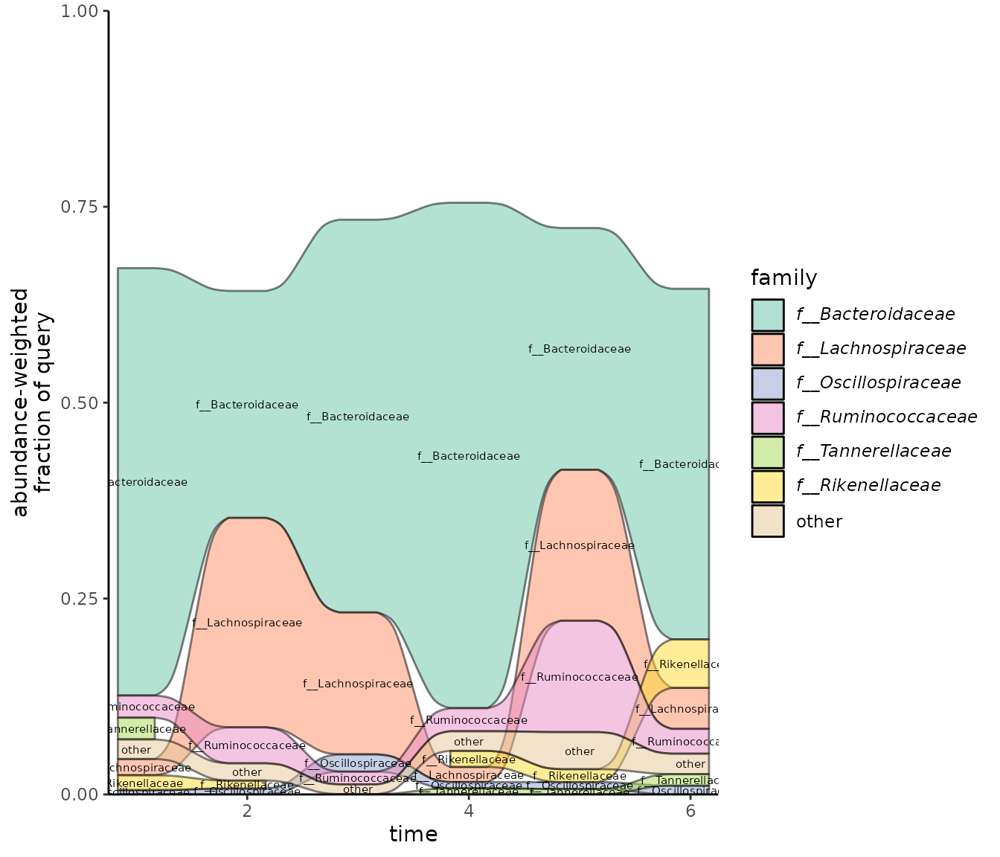
In this plot, the f_unique_weighted value from the
sourmash gather results is agglomerated to the user-specified
tax_glom_level. The fraction_threshold is the
minimum fraction that a lineage needs to be present in at least one
sample in the time series for the lineage to get its own alluvial ribbon
on the plot. If lineage is present at less than this threshold, it will
get grouped into the “other” category.
The plot outputs by plot_taxonomy_annotate_ts_alluvial()
is a ggplot. To change the palette, add a layer to the plot.
plot_taxonomy_annotate_ts_alluvial(taxonomy_annotate_df = gut_taxonomy_annotate_df,
time_df = time_df,
tax_glom_level = "family",
fraction_threshold = 0.01) +
ggplot2::scale_fill_brewer(palette = "Paired")
#> Scale for fill is already present.
#> Adding another scale for fill, which will replace the existing scale.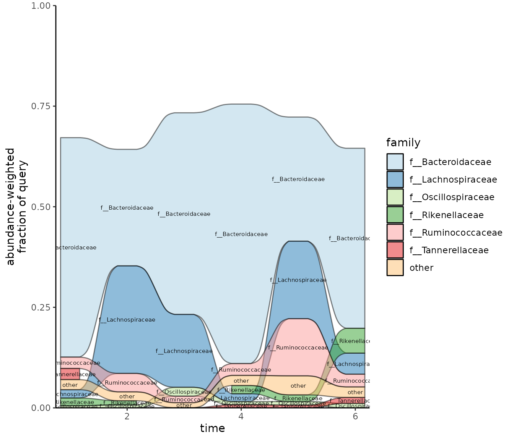
Alternatively, you can set the palette by providing a character
vector to the palette argument:
plot_taxonomy_annotate_ts_alluvial(taxonomy_annotate_df = gut_taxonomy_annotate_df,
time_df = time_df,
tax_glom_level = "family",
fraction_threshold = 0.01,
palette = c('#A6CEE3', '#1F78B4', '#B2DF8A',
'#33A02C', '#FB9A99', '#E31A1C',
'#FDBF6F', '#FF7F00', '#CAB2D6',
'#6A3D9A', '#FFFF99', '#B15928'))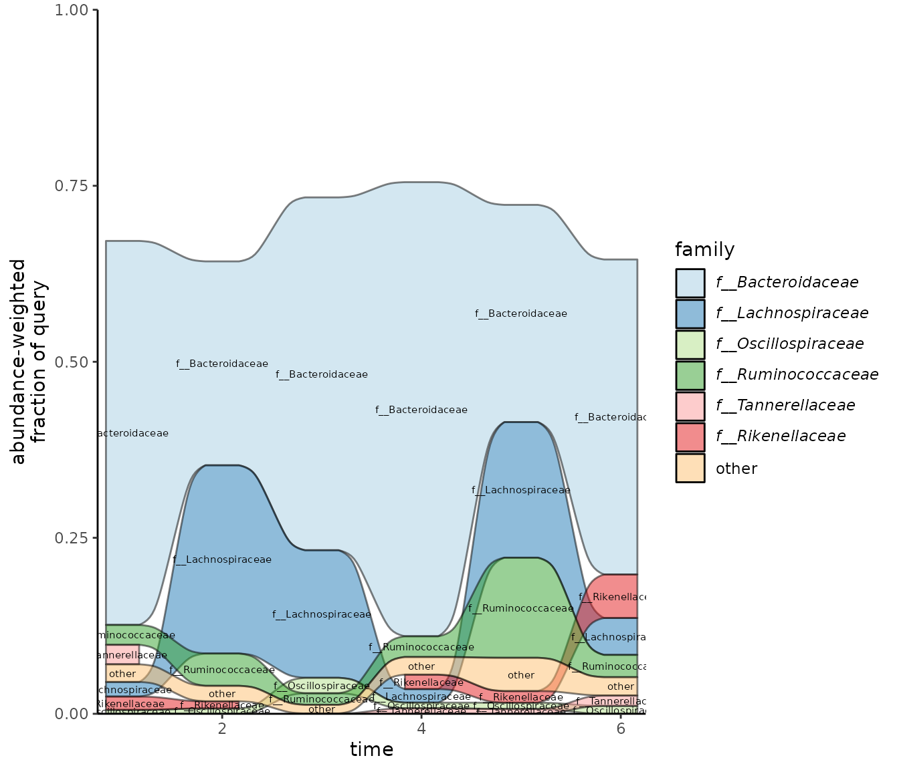
By default, taxonomic labels are displayed on the plot
(label = TRUE). If you would like to control the look of
the labels, use label = FALSE and then add a layer to the
output plot for the labels:
plot_taxonomy_annotate_ts_alluvial(taxonomy_annotate_df = gut_taxonomy_annotate_df,
time_df = time_df,
tax_glom_level = "family",
fraction_threshold = 0.01,
label = F) +
ggalluvial::stat_alluvium(geom = "text", size = 2, decreasing = FALSE, min.y = 0.005)
Converting from taxonomy annotate to phyloseq object
Phyloseq is an R
package for exploring microbiome data. In particular, phyloseq provides
a number of visualizations (ordination, alpha diversity, heatmaps,
networks, etc.). The sourmashconsumr package provides a function,
from_taxonomy_annotate_to_phyloseq(), to convert the
sourmash of sourmash taxonomy annotate into a phyloseq object.
gut_phyloseq <- from_taxonomy_annotate_to_phyloseq(taxonomy_annotate_df = gut_taxonomy_annotate_df,
metadata_df = metadata %>%
tibble::column_to_rownames("run_accessions"))
gut_phyloseq
#> phyloseq-class experiment-level object
#> otu_table() OTU Table: [ 437 taxa and 6 samples ]
#> sample_data() Sample Data: [ 6 samples by 1 sample variables ]
#> tax_table() Taxonomy Table: [ 437 taxa by 8 taxonomic ranks ]This object can then be used with many of the built-in phyloseq functions:
phyloseq::plot_bar(gut_phyloseq)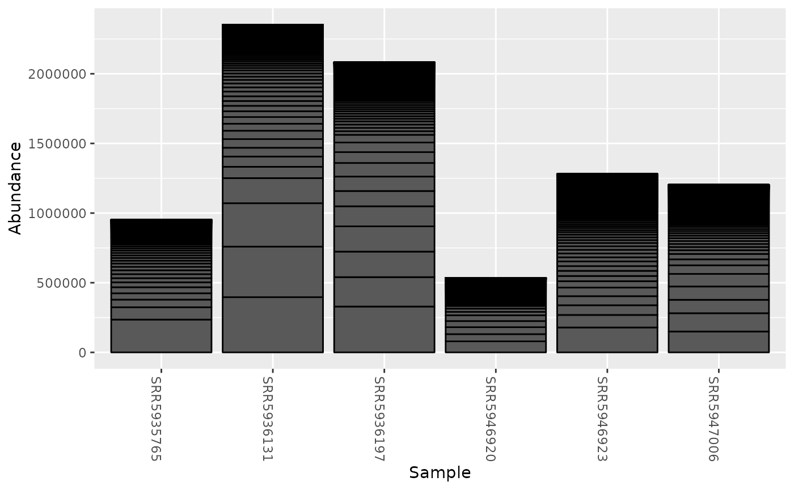
In this case, the phyloseq object is built from the number of abundance-weighted unique hashes (k-mers) that were identified in each sample for each taxonomic lineage. This means that the scaled value will impact the counts in the final phyloseq object. Therefore, it’s best to build phyloseq objects from samples that were sketched and gathered using the same scaled values.
Converting from taxonomy annotate to a metacoder object
Metacoder
is an R package for visualizing heat trees from taxonomic data. The
sourmashconsumr package provides a function,
from_taxonomy_to_metacoder(), to convert the output of
sourmash taxonomy annotate to a metacoder object.
gut_metacoder <- from_taxonomy_annotate_to_metacoder(taxonomy_annotate_df = gut_taxonomy_annotate_df,
intersect_bp_threshold = 50000,
tax_glom_level = "order",
groups = metadata)
#> Summing per-taxon counts from 6 columns for 43 taxa
#> Calculating number of samples with a value greater than 0 for 6 columns in 2 groups for 43 observationsThis object can then be used with the built-in metacoder
visualizations like heattree():
# generate a heat_tree plot with taxa from all samples, agglomerated to the order level
set.seed(1) # This makes the plot appear the same each time it is run
metacoder::heat_tree(gut_metacoder,
node_label = taxon_names,
node_size = n_obs,
node_size_axis_label = "k-mer abundance",
layout = "davidson-harel", # The primary layout algorithm
initial_layout = "reingold-tilford") # Node location algorithm 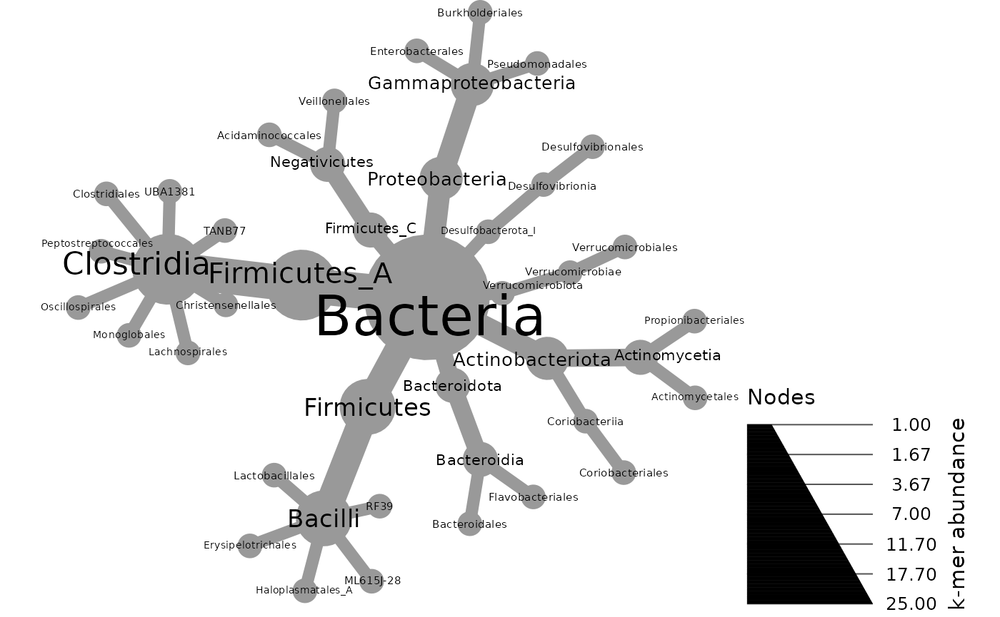
If your samples of interest come from two different groups, you can
also use the metacoder functions compare_groups and
heat_tree_matrix to visualize the differences between
groups. Note this only works with metacoder >= 0.3.5.3. You may need
to install the development version of metacoder to access this
functionality. You can check which version of metacoder you have
installed using packageVersion("metacoder"). (At the time
this vignette was written, this fucntionality was not available on CRAN
so the below code was not executed.)
# use metacoder function compare_groups() to compare abundances between cd and nonibd gut microbiomes
gut_metacoder$data$diff_table <- metacoder::compare_groups(gut_metacoder, data = "tax_abund",
cols = metadata$run_accessions,
groups = metadata$groups)
# visualize the differences between groups using the metacoder function heat_tree_matrix()
metacoder::heat_tree_matrix(gut_metacoder,
data = "diff_table",
node_size = n_obs,
node_label = taxon_names,
node_color = log2_median_ratio,
node_color_range = metacoder::diverging_palette(),
node_color_trans = "linear",
node_color_interval = c(-3, 3),
edge_color_interval = c(-3, 3),
node_size_axis_label = "Abund of taxonomic lineage",
node_color_axis_label = "Log2 ratio median proportions")Like the phyloseq object, the metacoder object is built from the number of abundance-weighted unique hashes (k-mers) that were identified in each sample for each taxonomic lineage. This means that the scaled value will impact the counts in the final metacoder object. Therefore, it’s best to build metacoder objects from samples that were sketched and gathered using the same scaled values.
Detecting whether multiple strains of the same species are present in a single metagenome
The sourmashconsumr package introduces a function to detect whether
multiple strains of the same species are likely present in a single
metagenome. It relies on f_match metric output by sourmash
gather as well as the taxonomic lineage (species) assigned by sourmash
taxonomy annotate. See the figure below for an explanation of how these
two pieces of information are combined to estimate whether multiple
strains are present. In this case, the reference database used in
sourmash gather is composed of four genomes of the same species (blue,
orange, green, and yellow). Each genome is represented as a sketch of
k-mers. Some k-mers are shared by all genomes in the database while
others are only present in some genomes. sourmash gather first finds the
best match between the k-mers in a metagenome and k-mers in a database.
In the example where only one genome is present (in purple), 0.8 (80%)
of the k-mers overlap with the blue genome so it is returned as the best
match. These k-mers are then subtracted and the search is repeated. The
orange genome is the next best match with 0.2 (20%) of the k-mers
overlapping, so it is returned next. The order the genome matches are
reported in is demarcated by a number next to the box that surrounds the
k-mers that matched a given genome. The fraction of the reference genome
found in the metagenome is one of the metrics reported in the sourmash
gather output (f_match). If only one strain (genome) of the
species is present in a metagenome, the summed fraction of all of the
genomes matched should not exceed ~1. When multiple strains are present
the first match found by sourmash gather may account for k-mers in both
strains. After summing the fraction of all matches, if the metagenome
was sequenced to sufficient depth, the summed fraction should exceed
~1.

Below we demonstrate how to use this approach on the results of sourmash taxonomy annotate. We first read in a CSV file produced by sourmash taxonomy annotate and filter it to contain valid taxonomic lineages.
cami_taxonomy_annotate_df <- read_taxonomy_annotate("https://github.com/Arcadia-Science/2022-sourmashconsumr-validation/files/10513494/CAMI_low_vs_source_genomes.with-lineages.csv") %>%
dplyr::filter(!species %in% c("unidentified", "unidentified virus", "unidentified plasmid", "Janthinobacterium species"))
#> File does not exist locally. Checking as url. If you did not pass a url, please provide a valid file path and retry. The Sys.glob() function might help if you're specifying multiple file paths.Then, we use the function
from_taxonomy_annotate_to_multi_strains() to determine
which species likely have multiple strains present and to visualize
these species.
multi_strain <- from_taxonomy_annotate_to_multi_strains(cami_taxonomy_annotate_df)
multi_strain$plt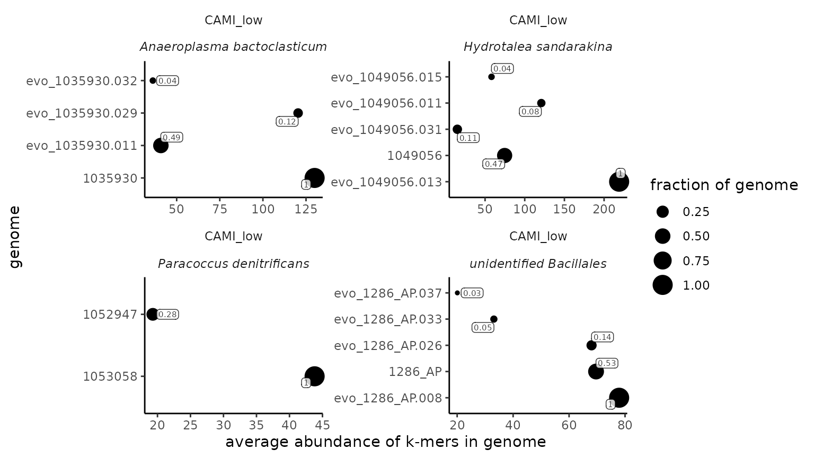
Upset utility functions
The sourmashconsumr package includes utility functions to create and work with upset-formatted data frames. These data frames record the presence-absence of the value that is intersected between many samples. The columns are the sample names, and the rows are the object that is shared by the samples. If a sample contained the object, a 1 appears in the column; if it did not, a 0 appears.
head(gut_gather_upset_df)
#> SRR5935765 SRR5936131 SRR5936197 SRR5946920 SRR5946923
#> GCF_002234575.2 1 1 0 1 0
#> GCF_001314995.1 1 1 1 1 1
#> GCF_000154205.1 1 1 1 1 1
#> GCF_000012825.1 1 1 1 1 1
#> GCF_002222615.2 1 1 1 1 1
#> GCF_000466485.1 1 1 0 1 0
#> SRR5947006
#> GCF_002234575.2 1
#> GCF_001314995.1 1
#> GCF_000154205.1 1
#> GCF_000012825.1 1
#> GCF_002222615.2 0
#> GCF_000466485.1 1The functions in the sourmashconsumr package pre-process or
post-process this data structure to extract information from it. The
from_list_to_upset_df() function is inspired by
UpSetR::fromList(). It creates the presence-absence data
frame seen above, but unlike the UpSetR::fromList()
function, it preserves the identity of the objects in the row names. The
rownames recording row identity can then act as an index to add metadata
to the presence-absence data frame that can then be visualized. In the
sourmashconsumr package, this was necessary to be able to color the the
upset plot bar graphs by group.
The functions from_upset_df_to_intersection_members(),
from_upset_df_to_intersection_summary(), and
from_upset_df_to_intersections() take an upset-formatted
data frame as input and report on the identity of intersections between
groups of samples.
from_upset_df_to_intersections() reports which samples
contain an object. The object is recorded as the row name, and the
intersection is reported as the sample names separated by an underscore.
If a sample doesn’t contain the object, that sample name is recorded as
a 0.
head(from_upset_df_to_intersections(gut_gather_upset_df))
#> intersection
#> GCF_002234575.2 SRR5935765_SRR5936131_0_SRR5946920_0_SRR5947006
#> GCF_001314995.1 SRR5935765_SRR5936131_SRR5936197_SRR5946920_SRR5946923_SRR5947006
#> GCF_000154205.1 SRR5935765_SRR5936131_SRR5936197_SRR5946920_SRR5946923_SRR5947006
#> GCF_000012825.1 SRR5935765_SRR5936131_SRR5936197_SRR5946920_SRR5946923_SRR5947006
#> GCF_002222615.2 SRR5935765_SRR5936131_SRR5936197_SRR5946920_SRR5946923_0
#> GCF_000466485.1 SRR5935765_SRR5936131_0_SRR5946920_0_SRR5947006The order of the column names is consistent between objects.
from_upset_df_to_intersections(gut_gather_upset_df) %>%
dplyr::arrange(intersection) %>%
head()
#> intersection
#> GCA_000437275.1 0_0_0_0_0_SRR5947006
#> GCF_001404675.1 0_0_0_0_0_SRR5947006
#> GCF_002265625.1 0_0_0_0_0_SRR5947006
#> GCA_900555925.1 0_0_0_0_0_SRR5947006
#> GCA_900540595.1 0_0_0_0_0_SRR5947006
#> GCA_900542935.1 0_0_0_0_0_SRR5947006from_upset_df_to_intersection_summary() summarizes the
size of these intersections. Below, sample SRR5946923 has
47 objects that are only observed in that sample. These intersection
sizes match those reported in the upset plot upper bar graph.
head(from_upset_df_to_intersection_summary(gut_gather_upset_df))
#> # A tibble: 6 × 2
#> intersection n
#> <chr> <int>
#> 1 0_0_0_0_SRR5946923_0 47
#> 2 0_SRR5936131_0_0_0_0 38
#> 3 0_0_0_0_0_SRR5947006 36
#> 4 0_0_SRR5936197_0_SRR5946923_0 30
#> 5 SRR5935765_SRR5936131_SRR5936197_SRR5946920_SRR5946923_SRR5947006 25
#> 6 0_0_0_SRR5946920_0_0 23from_upset_df_to_intersection_members() reports the
identity of objects that are shared by each group.
intersection_members <- from_upset_df_to_intersection_members(gut_gather_upset_df)The object that is output is a list, so it can be indexed into by name. For example, if we were curious about the objects that were observed in all samples, we could use the following:
intersection_members$SRR5935765_SRR5936131_SRR5936197_SRR5946920_SRR5946923_SRR5947006
#> [1] "GCF_001314995.1" "GCF_000154205.1" "GCF_000012825.1" "GCF_000239295.1"
#> [5] "GCF_000484655.1" "GCA_900557355.1" "GCF_000210075.1" "GCA_900755095.1"
#> [9] "GCF_014334015.1" "GCF_016908695.1" "GCF_005121165.2" "GCA_900760795.1"
#> [13] "GCF_009696065.1" "GCF_900106755.1" "GCF_013009555.1" "GCA_900761785.1"
#> [17] "GCA_902362375.1" "GCA_001915545.1" "GCF_009193295.2" "GCA_900758315.1"
#> [21] "GCF_003324185.1" "GCA_003573975.1" "GCA_003112755.1" "GCA_003584705.1"
#> [25] "GCA_900762515.1"The upset functions work on any upset-formatted data frame, not just those that are created by the sourmashconsumr package. They will be most meaningful if the upset data frame has row names.